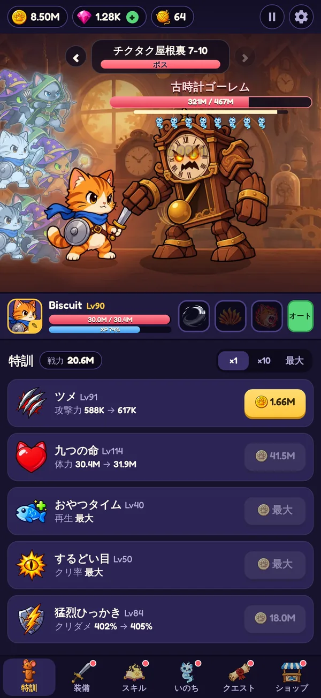
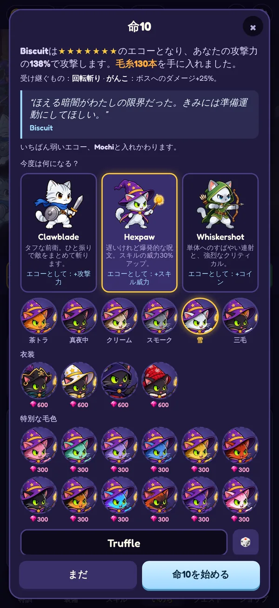
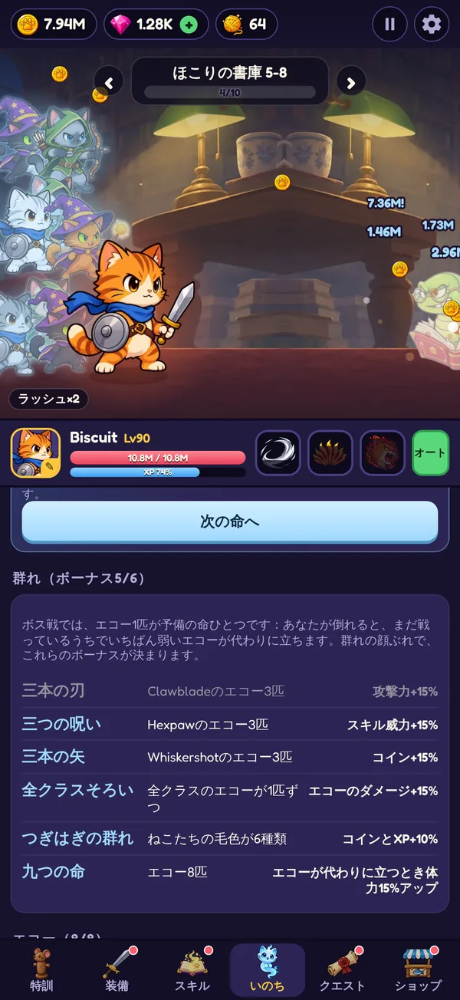
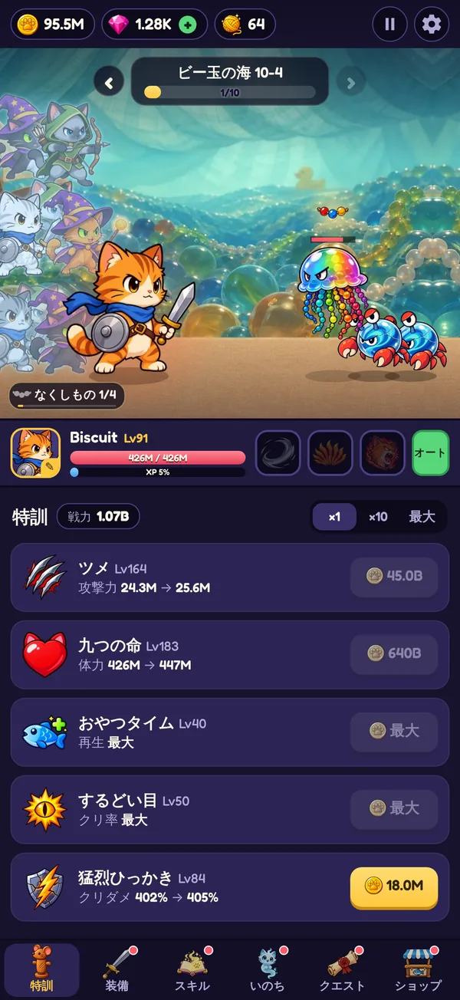
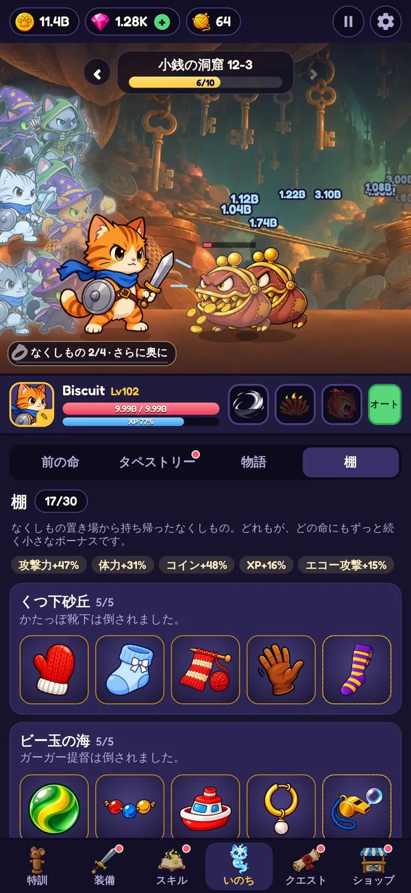
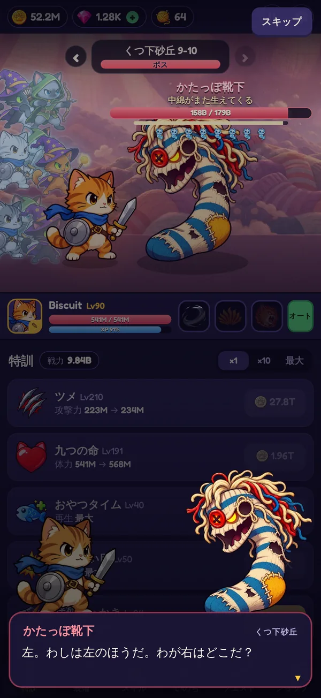

Pawst Lives
自分のこれまでの命がパーティーになる放置RPG。
ねこには九つの命がある。あなたのねこは、そのすべてが同時に戦います。ひとつの命が行けるところまで行ったら次の命を始めます。すると、それまでのねこは「エコー」というおばけになって戻り、それからずっとあなたのとなりで戦います。
App Storeで無料ダウンロードiPhone・iPad対応。広告なし。アカウントなし。オフラインで遊べます。

九匹のねこ。ひとりのヒーロー。ぜんぶあなたです。
明かりが消えると、家はダンジョンに変わります。庭のスプリンクラーはヒドラ。トースターはドラゴン。そして階段の下の暗がりのどこかで、掃除機が待っています。
ひとつの命を生きる
Clawblade、Hexpaw、Whiskershot のどれかでプレイ。ねこは自動で戦います。あなたは特訓し、見つけた装備を着けさせ、スキルを使うタイミングを決めます。
うまく終える
ボスを倒せなくなったら、次の命を始めましょう。遠くまで進んだ命ほど、強いエコーを残します。
おばけたちと一緒に戦う
エコーは最大八匹まで仲間になり、それぞれがいちばん鍛えたスキルを受け継ぎます。ボスに倒されても、エコーが代わりに立ちます。エコー一匹が、予備の命ひとつです。
ゲームの画面
ここにある画像はすべて、iPhoneで動いているゲームそのものです。iPadでも同じゲームが、画面いっぱいに表示されます。






放置してもよし、自分で操作してもよし
時間がないときは自動で進み、時間があるときは遊んだぶんだけ応えてくれます。
おばけの出る家
庭の門から、ほえる暗闇まで八つの部屋。それぞれにモンスターとボスがいます。缶ガニ。くつ下ゴブリン。触手のある洗濯機。
いつでも強化するものがある
五つのステータスを特訓し、クラスごとに三つのスキルを上げ、四つの装備枠を強化。タペストリーには、リセットされない強化を織りこめます。
群れを作ろう
同じクラスのエコー三匹、全クラスそろい、六種類の毛色、八匹そろいでボーナス。
日課ではなく、お昼寝
離れているあいだ、ねこたちはお昼寝。戻ると少しのコインと、しばらく稼ぎが二倍になる元気いっぱいのねこが待っています。
タップしても、狙っても、おまかせでも
敵に飛びかかる、スキルをここぞというときまで取っておく、すべてオートにする。どれでもどうぞ。
毎日、無料でもらえるもの
デイリークエスト、実績、毎日のプレゼント。どれも、買わなくていいジェムがもらえます。
フェアで、静か
ひとりで作っています。作りたかったのは、遊ぶ人をそっとしておくゲームです。
- 広告なし
- アカウントなし
- トラッキングなし
- オフライン対応
あなたについての情報は何も集めません。App Storeのプライバシーラベルにもデータを収集しないと表示されており、プライバシーポリシー（英語）は1ページだけです。無料で遊べて、任意の課金は六つ（ジェムと、ずっと使える買い切りの強化が二つ）。サブスクリプションはありません。ゲームを進めるのに課金は必要なく、買うものが運で決まることもありません。ガチャはありません。
iPad対応、五つの言語を追加、ショップに運まかせなし
- iPad対応。ゲーム全体が画面いっぱいに表示されます。
- ゲームがあなたについてきます。セーブデータは端末に加えて、あなた自身のiCloudにも保存されます。新しいiPhoneやiPadでも、ねこたちはそのまま待っています。アカウントは今も不要です。
- 日本語、スペイン語、ポルトガル語（ブラジル）、フランス語、ドイツ語。物語をふくめ、ゲームのすべてを翻訳しました。端末の言語に合わせて表示され、別の言語で遊びたいときは設定の「言語」カードで選べます。
- ガチャなし。装備の宝箱は運まかせではなくなりました。中の四つの装備を見て、好きなものをひとつ選べます。
- お知らせ機能（希望する方だけ）。オンにするまではオフのままです。
よくある質問
Pawst Livesは無料ですか？
はい。無料でダウンロードでき、お金を払わずに最後まで遊べます。任意のアプリ内課金が六つあります：ジェムのパックが四つと、ずっと使える買い切りの強化が二つ。サブスクリプションはありません。
広告はありますか？
いいえ。広告は一切ありません。これまでも一度もありません。
オフラインで遊べますか？
はい。ゲーム全体が通信なしで遊べます。オンラインのときは、毎日のごほうびが実際の日付を確認します。
放置RPGとは？
自動で進んでいくロールプレイングゲームです。Pawst Livesでは、ねこたちが自分で戦います。あなたが決めるのは、何を特訓するか、何を装備させるか、いつスキルを使うか、そしていつ次の命を始めるかです。
アカウントは必要ですか？何を収集しますか？
アカウントもサインインもありません。あなたについての情報は何も集めません。くわしくはプライバシーポリシー（英語）をご覧ください。
iPadやAndroidで遊べますか？
iPhoneとiPadで遊べます。iCloudに保存したセーブデータで、どちらでも続きから遊べます。Android版はありません。
対応している言語は？
日本語、英語、スペイン語、ポルトガル語（ブラジル）、フランス語、ドイツ語です。端末の言語に合わせて表示され、設定の「言語」カードで別の言語を選べます。
うまく動きません。どこに問い合わせればいいですか？
サポートページ（英語）で、セーブデータ、購入、ボスの攻略について説明しています。問い合わせ先のアドレスもあります。